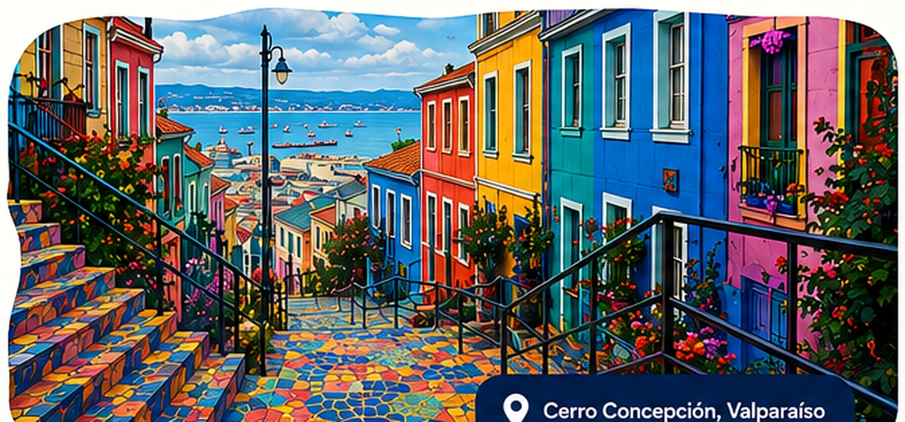

Cultura cerca, siempre
Descubre lo mejor de
nuestra cultura
— actividades culturales en Valparaíso y Viña del Mar, reunidas desde fuentes verificables.
- Actualizado
a diario - Revisión
editorial - Información
confiable

Cargando agenda
Estamos preparando las actividades disponibles.
Agenda completa
Encuentra tu próximo panorama
Información actualizada a diario.
Orden editorial y cronológico
No encontramos actividades
Prueba quitando un filtro o eligiendo otra sección.